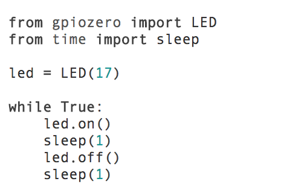

Pour allumer une LED, on branche l’anode (patte longue, terminal positif) sur n’importe quel port GPIO, en série avec une résistance de 560ohm, puis on branche l a cathode (patte courte, terminal négatif, côté plat) dans un port GND de la carte.
En utilisant la bibliothèque WiringPi, le code pour appliquer du potentiel à la LED est très simple.
Dans le terminal, il suffit d’entrer :
« gpio mode 0 out »
« gpio write 0 1 »
Syntaxe de commande : [fichier] ‘commande’ ‘port WiringPi’ ‘argument’
Dans cet example on utilise le port wiringPi 0 (la patte 11), pour appliquer le potentiel. Le fichier « gpio » (où les fonctions de WiringPi sont definies) est exécuté, et la commande « mode 0 out » configure ce port comme une sortie, puis la commande « write 0 1 » met le port en haut potentiel, 5V. Pour éteindre la LED il suffit d’envoyer la commande « gpio write 0 0 » pour remettre le bas potentiel, 0V.On peut aussi utiliser une autre bibliothèque appelée Gpiozero, qui fournit encore plus de fonctions utiles pour faire l’interface avec les ports GPIO. Cette bibliothèque utilise le numérotation BCM.
Un petit programme Python pour faire clignoter une LED est donné ci-dessous :
